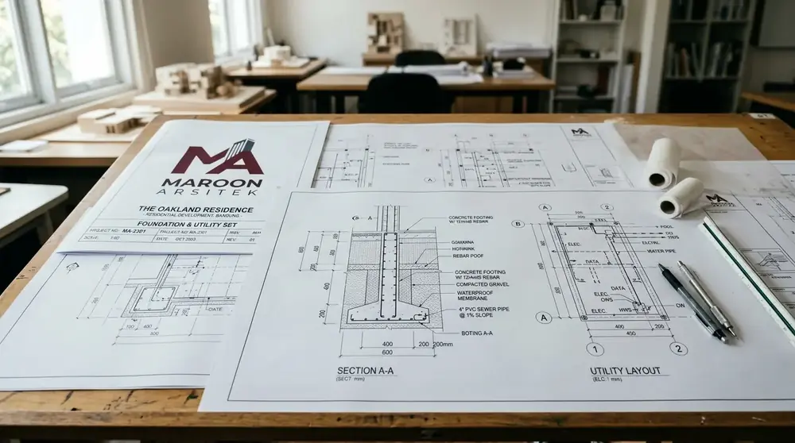
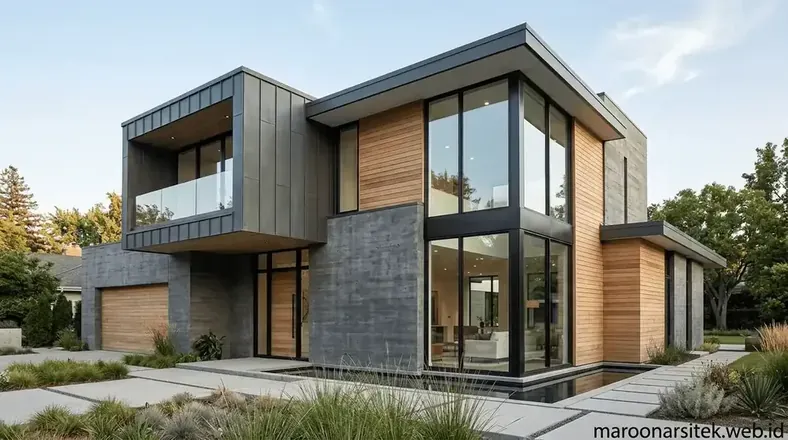

Biaya jasa arsitek rumah umumnya dihitung berdasarkan luas bangunan, tingkat kompleksitas desain, dan cakupan layanan yang dipilih, mulai dari desain saja hingga pendampingan penuh sampai konstruksi selesai. Memahami rincian biaya ini sejak awal membantu Anda mempersiapkan anggaran konstruksi secara terencana dan menghindari risiko biaya tak terduga.
Komponen Utama dalam Biaya Jasa Arsitek
Komponen biaya jasa arsitek umumnya mencakup honorarium desain, penyusunan gambar kerja, dan opsi pengawasan konstruksi yang dapat dipilih sesuai kebutuhan klien.
Honorarium desain merupakan komponen utama yang mencakup proses konsultasi, pengembangan konsep, hingga revisi desain sampai disetujui klien. Setelah konsep final disepakati, biaya berikutnya berkaitan dengan penyusunan gambar kerja teknis yang mencakup denah, tampak, potongan, dan detail konstruksi.
Jika klien memilih layanan pendampingan konstruksi, terdapat komponen biaya tambahan untuk pengawasan berkala guna memastikan pelaksanaan di lapangan sesuai dengan gambar kerja yang telah disusun.

Faktor Luas dan Kompleksitas Bangunan yang Memengaruhi Biaya
Luas bangunan dan tingkat kompleksitas desain menjadi faktor utama yang membuat biaya jasa arsitek antara satu proyek dengan proyek lain bisa berbeda cukup signifikan.
Semakin besar luas bangunan, semakin banyak elemen yang perlu direncanakan, mulai dari tata ruang, struktur, hingga sistem utilitas. Selain luas, tingkat kerumitan desain seperti bentuk atap khusus, elemen struktur ekspos, atau kebutuhan ruang dengan bentang lebar juga menambah waktu dan sumber daya yang dibutuhkan dalam proses desain.
Bangunan dengan banyak lantai atau fungsi campuran, seperti rumah dengan area usaha di lantai dasar, umumnya memerlukan perencanaan tambahan yang berdampak pada besaran biaya secara keseluruhan.
Pengaruh Lokasi dan Kondisi Lahan terhadap Biaya
Kondisi lahan seperti bentuk tidak beraturan, kontur berbeda, atau lahan sempit di kawasan padat dapat menambah kompleksitas desain sehingga memengaruhi biaya jasa arsitek.
Lahan dengan ukuran terbatas di kawasan perkotaan padat seperti Jakarta sering kali membutuhkan pendekatan desain khusus agar tetap fungsional dan optimal. Kondisi ini membuat proses perencanaan memerlukan analisis tambahan dibandingkan lahan dengan bentuk standar dan ukuran ideal.
Selain bentuk lahan, akses ke lokasi proyek dan ketersediaan data lahan seperti hasil pengukuran juga dapat memengaruhi waktu dan biaya tahap awal perencanaan.
"Transparansi perhitungan biaya arsitektur sejak awal memastikan anggaran pembangunan rumah Anda terukur dan bebas dari pembengkakan biaya tak terduga."
— Erlang Sinatrya, Penulis Maroon Arsitek
Cakupan Layanan yang Menentukan Struktur Biaya
Struktur biaya jasa arsitek berbeda tergantung cakupan layanan yang dipilih, mulai dari layanan desain saja hingga layanan menyeluruh termasuk pengawasan konstruksi.
Klien yang hanya membutuhkan gambar desain untuk keperluan pengajuan izin akan memiliki struktur biaya berbeda dibandingkan klien yang menginginkan pendampingan penuh hingga bangunan selesai dibangun. Semakin luas cakupan layanan, semakin besar pula tanggung jawab tim arsitek dalam memastikan hasil akhir sesuai rencana.
Penting bagi klien untuk memahami cakupan layanan sejak awal agar tidak terjadi kesalahpahaman terkait apa saja yang termasuk dalam biaya yang disepakati.

Konsultasikan Kebutuhan & Anggaran Anda Bersama Maroon Arsitek
Maroon Arsitek selalu mengedepankan transparansi biaya dan fleksibilitas paket perencanaan yang dapat disesuaikan dengan kebutuhan serta anggaran proyek Anda.
Hubungi tim kami melalui WhatsApp di 0889-8964-3555 untuk menjadwalkan konsultasi awal dan mendapatkan perkiraan biaya perencanaan yang akurat.